Aprimorando o conhecimento teórico-prático e formando o futuro da excelência cirúrgica através de ensino, pesquisa e extensão.
A Liga Acadêmica de Cirurgia Geral (LIACIG) tem como propósito fundamental proporcionar aos acadêmicos de medicina a oportunidade de aprofundar seus conhecimentos na área cirúrgica.
Unimos a teoria à prática, guiando nossos ligantes por meio de discussões de casos, treinamento em laboratório de habilidades e fomento à pesquisa científica, pilares essenciais para a formação de profissionais médicos capacitados e éticos.
Instituição Sede
Orientadores e Diretoria
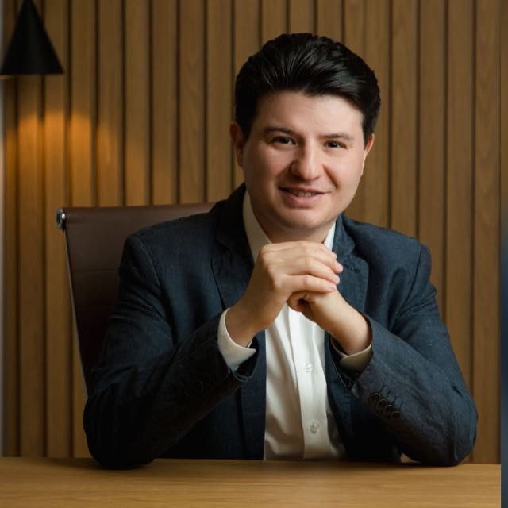
Coordenador
Tutor
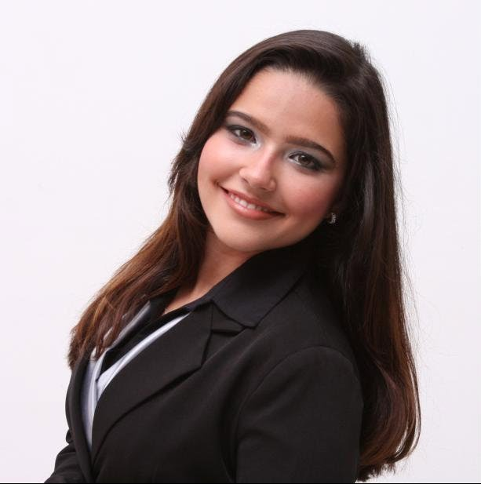
Tutora
Conheça os acadêmicos responsáveis por conduzir as atividades e construir o legado da Liga Acadêmica de Cirurgia Geral.
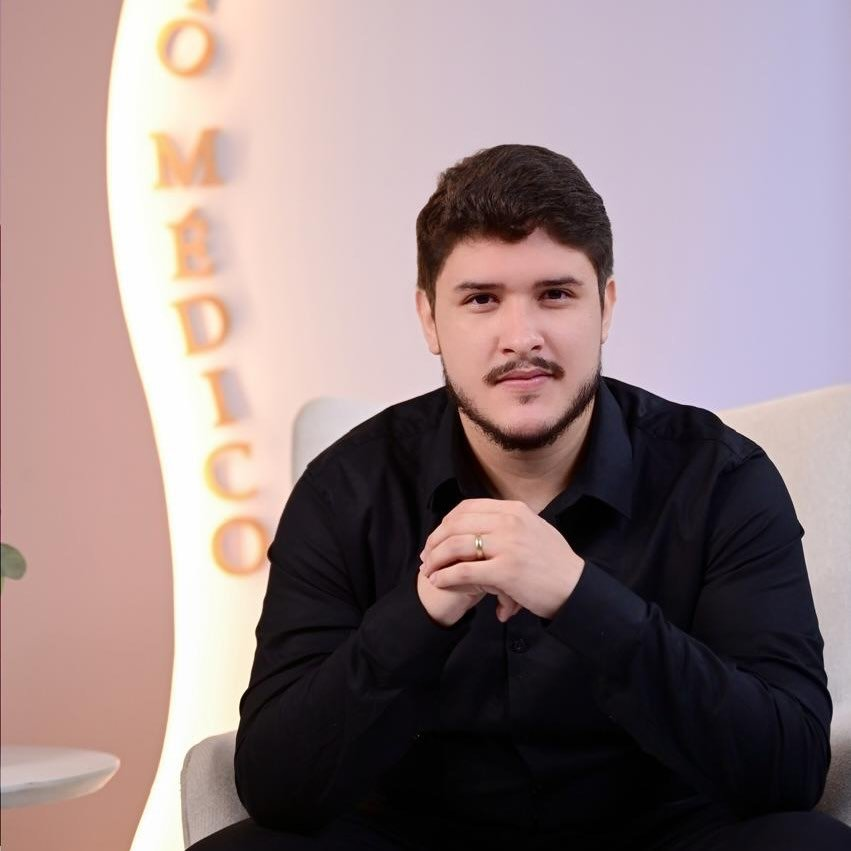
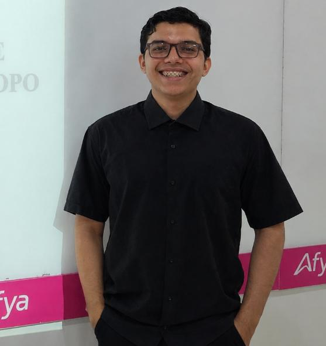
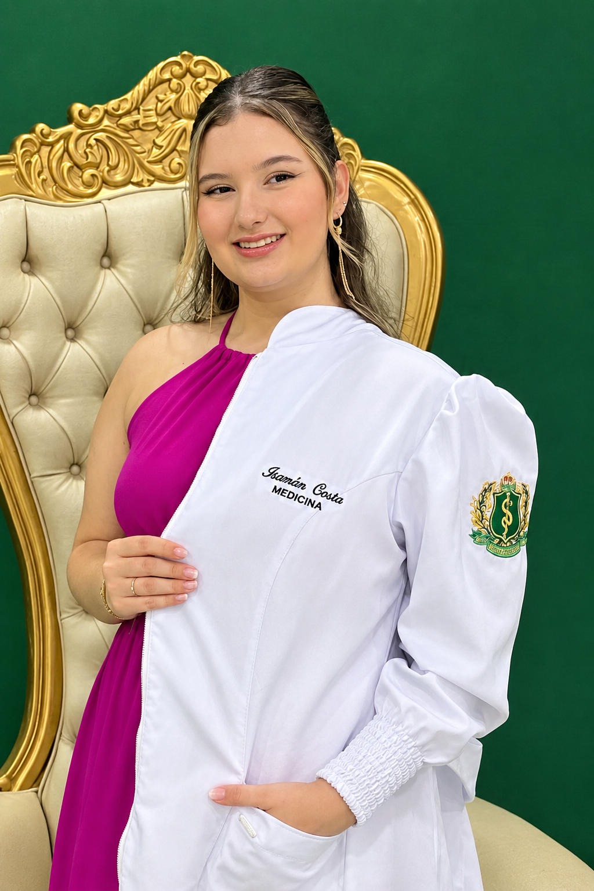
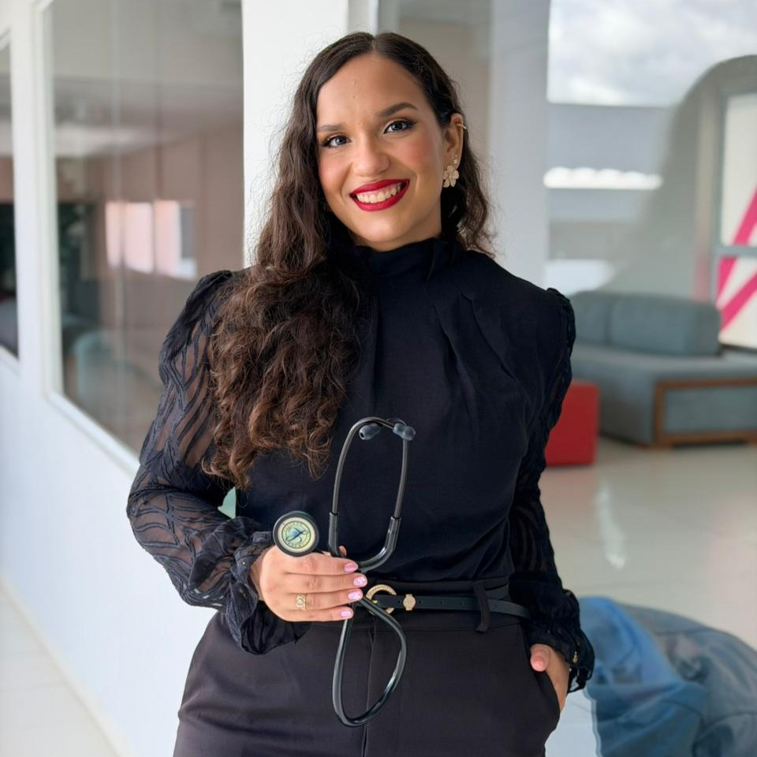
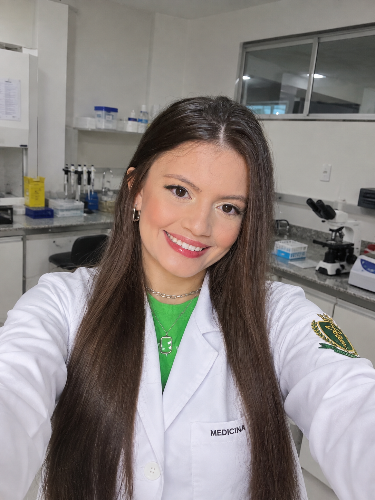
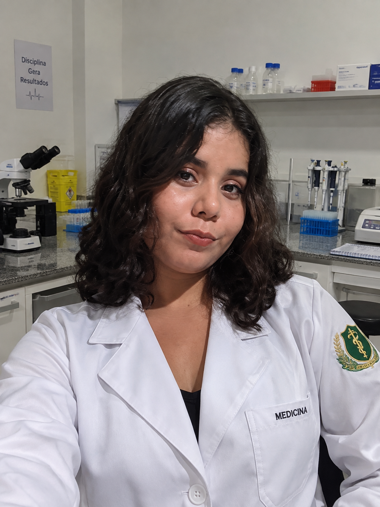
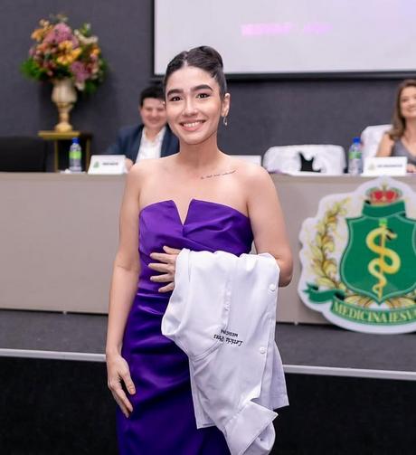
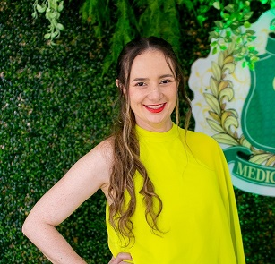
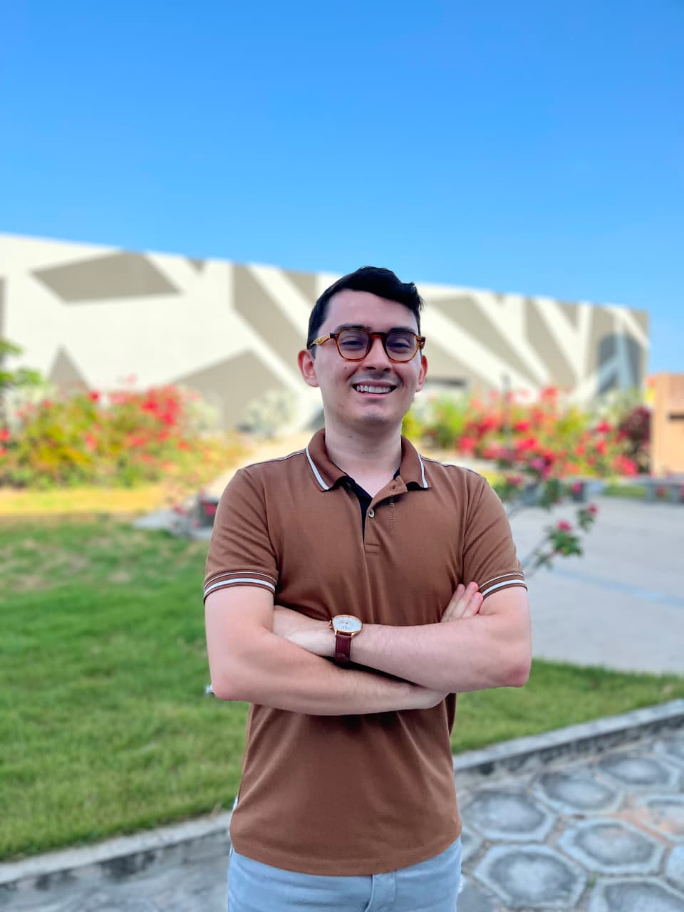
Desenvolvemos nossas ações baseadas no tripé universitário, garantindo uma formação completa e integrada.
Encontros regulares com foco em discussões de casos clínicos, atualizações bibliográficas e estudo aprofundado das diretrizes cirúrgicas atuais.
Treinamento prático em laboratório de habilidades, focando em paramentação, antissepsia, instrumentação, confecção de nós e técnicas de sutura.
Produção de artigos científicos, participação em congressos, realização de simpósios e projetos que levam o conhecimento à comunidade.
Acompanhe nossas redes sociais e os editais da Afya Faculdade Parnaíba para o próximo processo seletivo.
Fale Conosco